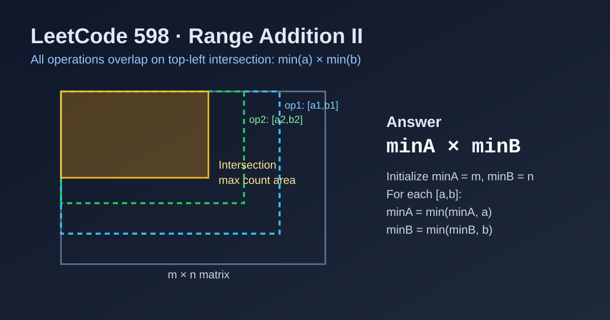

LeetCode 598: Range Addition II (Top-left Intersection Counting)
LeetCode 598MatrixMathGeometryToday we solve LeetCode 598 - Range Addition II.
Source: https://leetcode.com/problems/range-addition-ii/

English
Problem Summary
Start with an m x n matrix filled with 0. For every operation [a, b], increment all cells M[i][j] where 0 <= i < a and 0 <= j < b. After all operations, return how many cells contain the maximum value.
Key Insight
Each operation affects a top-left rectangle. Cells with the maximum value are exactly those covered by every operation, i.e., the intersection of all rectangles. Its size is:
minA * minB, where minA = min(a), minB = min(b) across all operations.
If there is no operation, every cell remains 0 and the maximum appears in all m * n cells.
Algorithm
- Initialize minA = m, minB = n.
- For each operation [a, b]:
- minA = min(minA, a)
- minB = min(minB, b)
- Return minA * minB.
Complexity Analysis
Let k be number of operations.
Time: O(k).
Space: O(1).
Reference Implementations (Java / Go / C++ / Python / JavaScript)
class Solution {
public int maxCount(int m, int n, int[][] ops) {
int minA = m, minB = n;
for (int[] op : ops) {
minA = Math.min(minA, op[0]);
minB = Math.min(minB, op[1]);
}
return minA * minB;
}
}func maxCount(m int, n int, ops [][]int) int {
minA, minB := m, n
for _, op := range ops {
if op[0] < minA {
minA = op[0]
}
if op[1] < minB {
minB = op[1]
}
}
return minA * minB
}class Solution {
public:
int maxCount(int m, int n, vector<vector<int>>& ops) {
int minA = m, minB = n;
for (const auto& op : ops) {
minA = min(minA, op[0]);
minB = min(minB, op[1]);
}
return minA * minB;
}
};class Solution:
def maxCount(self, m: int, n: int, ops: List[List[int]]) -> int:
min_a, min_b = m, n
for a, b in ops:
min_a = min(min_a, a)
min_b = min(min_b, b)
return min_a * min_bvar maxCount = function(m, n, ops) {
let minA = m, minB = n;
for (const [a, b] of ops) {
minA = Math.min(minA, a);
minB = Math.min(minB, b);
}
return minA * minB;
};中文
题目概述
给定一个初始全为 0 的 m x n 矩阵。每个操作 [a, b] 会把左上角子矩阵（行 0..a-1、列 0..b-1）全部加 1。最后返回矩阵中最大值出现的元素个数。
核心思路
每次都是更新左上角矩形。最终最大值只会出现在“被所有操作共同覆盖”的区域，也就是所有矩形的交集。交集尺寸为：
minA * minB，其中 minA 是所有 a 的最小值，minB 是所有 b 的最小值。
若没有任何操作，整个矩阵都保持 0，最大值出现次数就是 m * n。
算法步骤
- 初始化 minA = m，minB = n。
- 遍历每个操作 [a, b]：
- minA = min(minA, a)
- minB = min(minB, b)
- 返回 minA * minB。
复杂度分析
设操作数为 k。
时间复杂度：O(k)。
空间复杂度：O(1)。
多语言参考实现（Java / Go / C++ / Python / JavaScript）
class Solution {
public int maxCount(int m, int n, int[][] ops) {
int minA = m, minB = n;
for (int[] op : ops) {
minA = Math.min(minA, op[0]);
minB = Math.min(minB, op[1]);
}
return minA * minB;
}
}func maxCount(m int, n int, ops [][]int) int {
minA, minB := m, n
for _, op := range ops {
if op[0] < minA {
minA = op[0]
}
if op[1] < minB {
minB = op[1]
}
}
return minA * minB
}class Solution {
public:
int maxCount(int m, int n, vector<vector<int>>& ops) {
int minA = m, minB = n;
for (const auto& op : ops) {
minA = min(minA, op[0]);
minB = min(minB, op[1]);
}
return minA * minB;
}
};class Solution:
def maxCount(self, m: int, n: int, ops: List[List[int]]) -> int:
min_a, min_b = m, n
for a, b in ops:
min_a = min(min_a, a)
min_b = min(min_b, b)
return min_a * min_bvar maxCount = function(m, n, ops) {
let minA = m, minB = n;
for (const [a, b] of ops) {
minA = Math.min(minA, a);
minB = Math.min(minB, b);
}
return minA * minB;
};
Comments